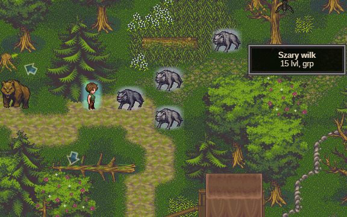
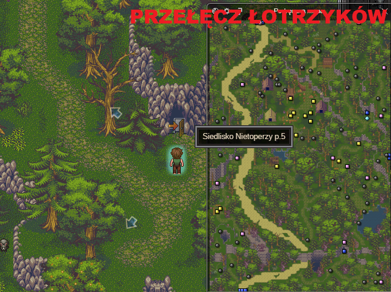

<body>
    <h3>21 lvl</h3> <br />
    <a>Bierzemy z zakonu równowagi w ithan misję na siedlisko nietoperzy</a> <br />
    <a>Udajemy się do przełęczy łotrzyków (mapka w dół z orlej grani)</a> <br />
    <a>Zabijajcie po drodze grupki potworów. Da wam to fajny exp. *screen*</a> <br />
     <br />
    <a>Wejście do siedliska nietoperzy *screen*</a> <br />
     <br />
    <a>Wybijcie wszystkie nietoperze i dobijcie przynajmniej do 85% na 21 poziomie.</a> <br />
    <a>Następnie udajemy się w dół do miasta Eder. (Dolina rozbójników, Mokradła, Fort Eder, Eder)</a> <br />
    <a>W Eder udajemy się oddać zakon równowagi oraz do zakonu planu astralnego.</a> <br />
    <a href="subpages/22lvl.html">22 lvl</a> <br />
</body>